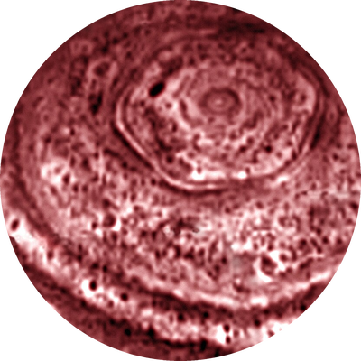
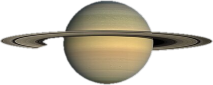
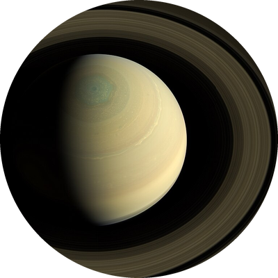

Saturn
Saturn is the sixth planet from the Sun and is famous for its bright rings. It is the second largest planet.



Facts about Saturn
- Diameter: about 116,460 km
- Distance from the Sun: about 1.4 billion km
- A day lasts about 10.7 hours and a year lasts about 29 Earth years
- It has more than 140 moons, and the largest is Titan
- Its rings are made mostly of water ice and rock
- Saturn is less dense than water, so it would float in a big enough bathtub